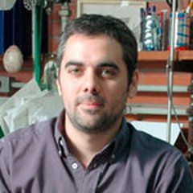

Institucional
Comisión de Carrera
La Comisión de Carrera de la Licenciatura en Paleontología está integrada por representantes de profesores, graduados y estudiantes. Período 2024-2026.


Claustro de Profesores
Departamento de Ciencias Geológicas
- Darío Gustavo LazoTitular · Director de carrera
- Claudia Alicia MarsicanoTitular · Directora adjunta
- Eduardo Guillermo OttoneTitular
- María Beatriz Aguirre-UrretaSuplente
- Graciela Andrea ConcheyroSuplente
- Diego PolSuplente
Departamento de Biodiversidad y Biología Experimental
- Nora MaidanaTitular
- Laura Nora López GrecoSuplente
Departamento de Ecología, Genética y Evolución
- Cecilia LapridaTitular
Claustro de Graduados
Departamento de Ciencias Geológicas
- Martín FarinaTitular
- Guillermo TurazziniTitular
- Rodrigo MartinSuplente
- Federico SeoaneSuplente
Departamento de Ecología, Genética y Evolución
- Ana L. TropeaTitular
Departamento de Biodiversidad y Biología Experimental
- Pablo PiccaTitular
- Romina BarrozoSuplente
Claustro de Estudiantes · 2025-2026
- Itziar IglesiasTitular
- Nahuel Liendro BatagliaTitular
- Diego Fernández KalenTitular
- Luca Nicolás MartiniSuplente
- Bruno Scaravilli CarballoSuplente
- Ian Thomas KrumpoeckSuplente
Actas dereuniones
Actas de las reuniones de la Comisión de Carrera desde 2011.
2026 2 documentos
2025 4 documentos
2024 5 documentos
2023 6 documentos
2022 5 documentos
2021 8 documentos
2020 8 documentos
2019 11 documentos
2018 10 documentos
2016 6 documentos
2015 9 documentos
2014 9 documentos
2013 7 documentos
2012 6 documentos
2011 5 documentos
Contacto
- Comisión de Carrera: direccion_paleontologia@gl.fcen.uba.ar
- Claustro de graduados: graduados.paleo@gmail.com
- Claustro de estudiantes: ccalumnospaleo@gmail.com